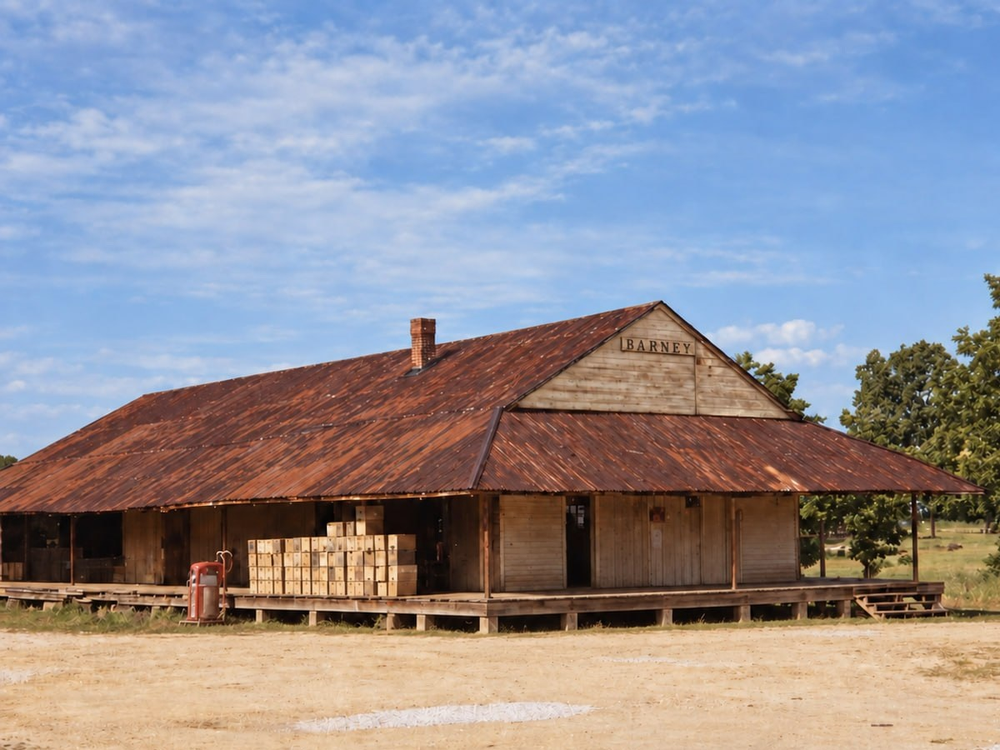
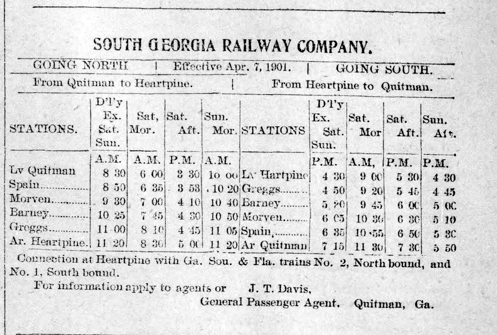

Transportation and communication
The railroad and post office gave Barney a public identity beyond the immediate settlement. By October 1897, the Oglesby mills at Heartpine and Barney were working on a railroad-car-sill order, while former congressman Henry G. Turner and railroad president J. W. Oglesby traveled to Washington to seek mail service over the new line. A November notice discussed a proposed star route from Barney to Pavo. These reports join three parts of the town's early growth: trains carried timber products, the railroad sought federal mail, and the station became a possible hub for routes extending away from the tracks.[7]

The October postal diagram showed a public road through the Barney site but did not name it. Comparison with later maps suggests that it followed the Rock Hill-Strickland corridor more closely than the separate road east toward the Bourquin property. That is an informed map reading, not a label found on the 1897 form. The distinction matters because the diagram is direct evidence for a road at the site, but not for its later name.[4]
Passenger service is directly visible in a September 1901 South Georgia Railway timetable. Barney appeared between Morven and Greggs on the Quitman-to-Heartpine schedule. A March 1900 dispatch placed Barney eighteen miles above Quitman and reported that the railway had declared a 10 percent dividend while pushing its southern extension. The dividend says something about the company at that moment, not the wealth of Barney. The mileage and published schedule are more useful locally because they show that the station had become an ordinary point in the railroad's regional network.[9][10]

Social notices show how residents used that network. A May 1898 wedding party traveled by train from Barney to Valdosta, with most of the group returning on the train popularly called the "shoo fly." The bride and groom stayed long enough to shop and caught a later train. Residents also visited Sparks, Hahira, Quitman, Adel, Valdosta, and other towns for business, school, church, and family reasons. By 1901 and 1902, such trips were routine enough to appear as short local notices rather than extraordinary journeys.[11][23][24][25]
Telephone messages reached or left Barney surprisingly early. On April 2, 1898, a message from Barney redirected a posse during the Pearl Fender manhunt. The article described Barney as being "over on the new road," which in context appears to mean the recently opened South Georgia Railroad. On February 7, 1899, Perry Peeples telephoned Barney from Quitman to confirm that a horse offered to him had been stolen. He had the suspect arrested while a party from Barney was reportedly close behind.[12]
Those calls prove telephone communication involving Barney by April 1898 and February 1899. They do not identify the telephone owner, operator, or route. They also do not prove that residents had access to a public exchange or that a switchboard operated in the Moody store. Edmondson's later account dates Barney's public exchange to 1912. The early calls may have used a railroad or business line, but the available pre-incorporation record does not establish that detail.[6]
By the end of the period, Barney's connections were layered. The main railroad linked the town with Quitman, Morven, Adel, Heartpine, and points beyond. Postal routes carried daily mail and were proposed toward Pavo. Public roads joined the station to farms and older settlements. Private timber trams ran into the woods. Telephone messages could travel between Barney and Quitman. The evidence is strongest for the existence of each connection and weaker for the exact ownership or route of some of them.
Sources used on this page
- [4] National Archives, Post Office Department reports of site locations, M1126, roll 102, NAID 68271694, images 0028, 0029, 0030, and 0031.
- [6] Stephen W. Edmondson, Remembering Morven and the Old 660th District (Bloomington, Indiana: iUniverse, 2014), chapter 23; local tradition attributed there to Pat Blease and the later account dating Barney's public telephone exchange to 1912.
- [7] Valdosta Times, October 26, 1897, Newspapers.com image 889778923; Tifton Gazette, November 5, 1897, p. 7, Georgia Historic Newspapers; Morning News, February 12, 1901, Newspapers.com image 879559707.
- [9] Adel News, September 6, 1901, p. 4, South Georgia Railway timetable.
- [10] Morning News, March 7, 1900, South Georgia Railway dividend, extension, Barney mileage, and Joe Hodges shooting dispatch.
- [11] Valdosta Times, May 1898, Brogan and Bullard wedding notice; Morning News, May 26, 1898, White Brogan and Ida Ballard version.
- [12] Valdosta Times, April 2, 1898, Newspapers.com image 889783271; February 7, 1899, Newspapers.com image 889670393.
- [23] Representative social and family notices: Valdosta Times, March 19, 1898, Jesse Chambers and Ellen Bennett marriage; December 27, 1898, A. J. Sorell; June 10, 1899, Folsom picnic at Miller Bridge, Newspapers.com image 889670701; August 19, 1899, E. C. Bridges; December 11, 1900, Manning and R. L. Hodges deaths; Tifton Gazette, September 9, 1898, and Valdosta Times, September 13, 1898, G. W. Prine Jr. death, Newspapers.com image 889765912; Macon Telegraph, June 24, 1899, Etta Ryall, Newspapers.com image 825814174; Atlanta Constitution, December 11, 1899, Joseph Bridges death; retained October 1901 Janie Joyce notice.
- [24] Adel News, June 23, 1899, F. B. Bregdon teacher notice; Atlanta Constitution, October 16, 1899, Minnie McKinnon notice, Newspapers.com image 26860159; Valdosta Times, September 3 and October 29, 1901, Culbreth notices, Newspapers.com images 889668939 and 889687085; April 1902 school-program reports; July 26, 1902, Barney High School report, Newspapers.com image 889690735; May 12, 1903, school closing, Newspapers.com image 889675531.
- [25] Valdosta Times, August 14, 1897, Rev. W. H. Smith preaching near Cecil, Newspapers.com image 889776963; Moultrie Observer, August 26, 1897, Elder Smith of Barney at a protracted meeting in Hempstead; Valdosta Times, July 4, 1899, Rev. A. J. Quattlebaum scheduled at Barney on July 20; Tifton Gazette, August 4, 1899, tent-meeting report, Georgia Historic Newspapers; Morning News, December 20, 1899, African Methodist appointment, Georgia Historic Newspapers; Adel News, May 17, 1901, quarterly meeting; Morning News, December 17, 1901, Methodist appointment; Atlanta Constitution, February 4, 1902, Rev. J. W. Folsom notary letter.